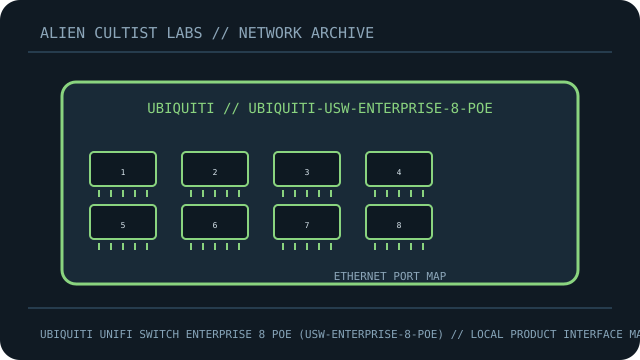

[ MODEL-SPECIFIC NETWORK HARDWARE ]
Ubiquiti UniFi Switch Enterprise 8 PoE (USW-Enterprise-8-PoE)
Managed multi-gigabit access switch with PoE+ on eight copper ports and dual 10G SFP+ uplinks. This record is limited to the exact named model; revisions and regional SKUs may differ.

MODEL IDENTIFICATION: Match the complete model number and revision on the manufacturer label before applying specifications. Published link rates are nominal, not measured application throughput.
Published specifications and compatibility
| Exact product | Ubiquiti UniFi Switch Enterprise 8 PoE (USW-Enterprise-8-PoE) |
|---|---|
| Archive subcategory | Managed switches |
| Physical ports | 8 × 2.5GbE RJ-45 PoE+ ports; 2 × 10Gb/s SFP+ uplink cages. |
| Host / chassis interface | Standalone AC-powered managed Ethernet switch; SFP+ accepts compatible optics or DAC separately. |
| Standards / protocol | UniFi-managed Layer 2 switching; IEEE 802.3at PoE+ output on RJ-45 access ports. |
| Rated link and switching rates | 2.5Gb/s per RJ-45 and 10Gb/s per SFP+; 80Gb/s switching capacity. Ratings are not user-level throughput. |
| Power and thermal notes | Integrated AC supply; 120W aggregate PoE budget per Ubiquiti technical specifications. Plan for cable and endpoint load within this budget. |
| Firmware / driver | Manage with a supported UniFi Network application/console and firmware; do not assume it is configured by a generic web UI. |
| Compatibility guidance | Requires UniFi Network application for centralized UniFi management. SFP+ modules/DAC must match fiber, distance and the far-end port. PoE+ endpoints and cable runs must be within IEEE/thermal limits. |
Model-specific deployment notes
This Enterprise 8 PoE revision has eight 2.5GbE PoE+ access ports and two 10G SFP+ uplinks; it is not the same device as the 1GbE USW-Lite-8-PoE.
For a reproducible speed or interoperability test, record both link-partner models, cable/media, firmware, negotiated rate and test method. No benchmark is claimed in this archival record.
Manufacturer sources and documentation
- UBIQUITI — official Ubiquiti UniFi Switch Enterprise 8 PoE (USW-Enterprise-8-PoE) product specificationsManufacturer product page/specification reference for this model.
- UBIQUITI — official support, manual or compatibility resourcesUse revision- and region-specific documentation for firmware, installation, media and compatibility decisions.
Source specifications describe rated capability; verify the label and current manufacturer documentation before purchase or deployment.